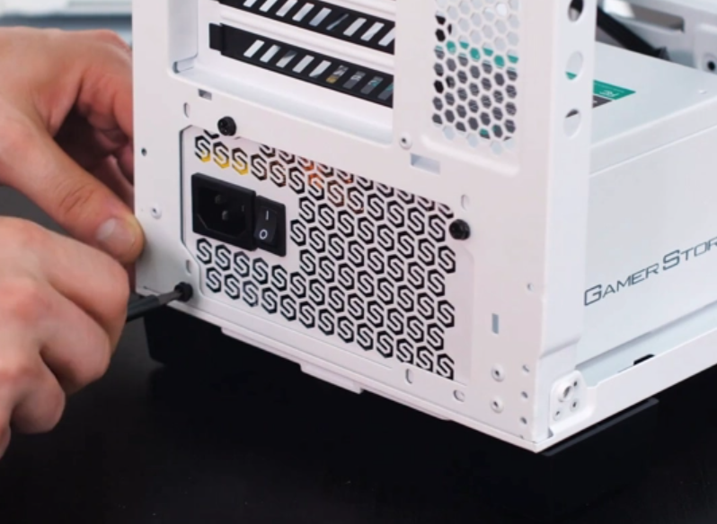

В наше время трудно обойтись без компьютера – это факт, так как данный аппарат является основным источником информации, развлечений, а для некоторых и дохода. На данный момент выгоднее всего – это собрать ПК самому.
Сборка компьютера – это процесс, который может доставить множество проблем, неприятностей, но при этом, сборка ПК самостоятельно может существенно сэкономить Вам деньги. Комплектующими в магазинах электроники могут стоять существенно дороже.
Для сборки полностью функционального ПК вам необходимы следующие комплектующие:
- Материнская плата,
- Видеокарта,
- Центральный процессор,
- Система охлаждения,
- Оперативная память,
- Блок питания,
- Жесткий диск/SSD,
- Корпус,
- Периферия и манипуляторы
Если говорть простыми словами о компонентах, то:
Материнская плата – это платформа, поддерживающая все компоненты компьютера. Комплектующие подключаются к материнской плате, которая связывает их и обеспечивает обмен информацией между ними.
С помощью видеокарты данные компьютера выводятся на экран монитора в виде текста, изображений и цветов.
Центральный процессор — «мозг» компьютера. Его основное предназначение — разбирать указания компьютера и обрабатывать данные компьютерных программ.
Охлаждение для процессора состоит из вентилятора и радиатора, он охлаждает процессор и защищает его от перегрева. Если этого не происходит, система отключается, чтобы защитить процессор от повреждений. Охлаждение для корпуса - это вентиляторы, которые охлаждают компоненты внутри корпуса.
Оперативная память используется для временного хранения данных, благодаря которому ускоряется обмен информацией между жестким диском и процессором. Частота и емкость модулей оперативной памяти влияют на эффективность работы компьютера.
Жёсткий диск и SSD-накопитель – устройства для хранения информации в компьютере. Накопитель на жестких магнитных дисках (HDD) – это недорогой высокоемкий накопитель относительно крупного размера и с невысокой скоростью считывания информации. Твердотелый накопитель (SSD) – это накопитель меньшей емкости, небольшой, дорогой, но очень быстрый.
Рекомендуемый порядок сборки:
- Установка блока питания и прокладывание проводов
- Установка накопителя SSD, процессора, крепежных элементов для системы охлаждения
- Установка планки оперативной памяти
- Установка материнской платы в корпус
- Подключение провода питания материнской платы и процессора
- Установка и подключение корпусных вентиляторов
- Установка системы охлаждения на процессор
- Установка и подключение жёстких дисков
- Установка и подключение видеокарты
- Подключение передней панели корпуса
Если у вас большой корпус, то монтаж можно сразу начать с установки материнской платы в корпус, но перед этим обязательно установить крепежные элементы для системы охлаждения. Так как не в каждом корпусе можно свободно заменить крепежную пластину системы охлаждения с обратной стороны. Если корпус маленький, лучше придерживаться рекомендаций и установить большую часть компонентов до монтажа материнской платы в корпус.
Давайте подробнее рассмотрим все пункты:
-
Установка блока питания и прокладывание проводов
В современных корпусах чаще всего отсек для блока питания располагается снизу.
В таком случае устанавливаем блок питания вентилятором вниз, не забываем прикрутить. Если блок питания модульный, лучше заранее подключить все необходимые провода перед его установкой. Именно необходимые, а не все, что есть в комплекте.
Обычно это кабель питания материнской платы, процессора, один кабель для питания жестких дисков и один кабель питания видеокарты (зависит от видеокарты и ее энергопотребления, об этом будет далее чуть подробнее).
До установки материнской платы в корпус, желательно определить места вывода питающих проводов из-за поддона и продеть в соответствующее отверстие.
-
Установка накопителя SSD, процессора, крепежных элементов для системы охлаждения
Начать сборку компьютера лучше всего с установки процессора в сокет материнской платы. Работа несложная, но требует внимания и аккуратности. В зависимости от производителя — AMD или INTEL — будет меняться расположение контактов на процессоре и материнской плате. У процессоров AMD выступающие контакты расположены на подложке процессора, в то время как у Intel контакты находятся непосредственно в сокете материнской платы.


-
Установка SSD-накопителя
Следующий этап — это установка SSD-накопителя, если таковой имеется. Устанавливается он в специальный разъем на материнской плате. Для установки используется специальная стойка с винтом, иногда она уже вкручена в материнскую плату иногда лежит в пакетике с комплектующими от материнской платы.
Вставляем накопитель в разъем и закручиваем винт. Главное не переусердствовать, накопитель просто должен держаться и не болтаться.

-
Установка планки оперативной памяти
Перед установкой оперативной памяти лучше лишний раз глянуть в инструкцию к материнской плате. Большинство современных процессоров AMD и Intel поддерживают двухканальный режим работы оперативной памяти. Чтобы его задействовать, необходимо установить оперативную память в правильные разъемы.
Подсказка по расположению каналов:

Обычно при наличии двух модулей памяти их устанавливают во 2 и 4 разъемы от процессора справа.
В разъеме для оперативной памяти имеется специальная перемычка, которую нужно совместить с ключом в слоте памяти.
Планки памяти фиксируются в слотах при помощи специальных защелок. В некоторых материнских платах защелка может быть только с верхней стороны слота. Сделано это для того, чтобы при замене планки памяти не пришлось снимать видеокарту. В таком случае начать устанавливать память лучше снизу, где нет фиксатора.
-
Установка материнской платы в корпус
Первым делом устанавливаем комплектную заглушку от материнской платы, она крепится в вырезе на тыльной стороне корпуса, главное не ошибиться с расположением разъемов.
В материнских платах верхней ценовой категории данная заглушка является частью самой платы, что несколько упрощает процесс монтажа.

Для крепления материнской платы в корпусе есть специальные стойки, а в самой плате отверстия, с помощью которых она надежно фиксируется в корпус.

В зависимости от размера материнской платы (форм-фактора) расположение стоек может меняться. В некоторых корпусах стойки вовсе могут быть не вкручены, но они обязательно должны быть в комплекте поставки вместе с корпусом. Вам нужно вкрутить недостающие стойки, которые требуются для установки материнской платы, и убрать неиспользуемые. Сам монтаж лучше проводить положив корпус горизонтально.
-
Подключение провода питания материнской платы и процессора
Подключением кабелей питания лучше заняться до установки системы охлаждения, т. к. если используются крупные кулеры, процесс подключение кабеля питания CPU сильно усложнится. Обычно это один 4 или 8 Pin разъем, но бывают материнские платы, где есть сразу два разъема 8 и 4 Pin или даже 8 и 8.
Разъем питания для CPU часто можно спутать с разъемом для видеокарты, поэтому перед подключением желательно убедиться, что это именно он — на колодке подключения есть расшифровка.

При подключении нужно ориентироваться по защелке на коннекторе и разъеме. Вставляем до характерного щелчка. Кабель должен быть плотно зафиксирован. Затем подключаем 24 пиновый кабель питания материнской платы. Тут также ориентируемся по щелчку.
При подключении этого разъема нужно быть предельно осторожным, т.к. материнская плата в этом месте сильно прогибается. Лучше придерживать ее рукой с обратной стороны.

-
Установка и подключение корпусных вентиляторов
Для оптимальной циркуляции воздуха внутри системника устанавливаем минимум два вентилятора: один на вдув в нижней части корпуса спереди, другой на выдув на задней панели корпуса прямо за процессором либо сверху.

-
Установка системы охлаждения на процессор
Процесс установки охлаждения для процессора в основном будет зависеть от выбранной вами модели. У каждой свои особенности по монтажу. Лучше ознакомиться с инструкцией от производителя, в ней обычно подробно указан процесс установки. Он также будет зависеть и от платформы: AMD или Intel.
Если используется сторонняя система охлаждения, после установки процессора нужно заменить крепления на материнской плате для ее установки. Бывают случаи, когда крепежные элементы системы охлаждения не позволяют открыть рамку сокета для установки процессора.
Самое главное перед установкой радиатора не забыть нанести термопасту на процессор.


Если в качестве системы охлаждения процессора у вас выступает боксовый кулер, будет удобнее его установить сразу после процессора.
При установке боксового кулера от компании INTEL с пластиковыми фиксаторами обязательно придерживайте материнскую плату с обратной стороны, чтобы она не прогибалась.
Материнская плата — это технически сложный и многослойная продукт. Прогибы и деформации могут вызвать повреждения контактов внутри текстолита, что приведет ее в негодность даже если внешне никаких дефектов видно не будет
Не забываем подключить к материнской плате вентилятор. Для подключения охлаждения CPU на материнской плате есть специальный 4 Pin разъем, обычно он называется CPU_FAN1. Если сомневаетесь, лучше взглянуть в инструкцию и точно убедиться, где он находится на материнской плате.
4 Pin разъемов на материнской плате может быть много, но нам нужен именно с обоснованием CPU. Другие разъемы предназначены для корпусных вентилятором (SYS_FAN) или подключения помпы от кастомной системы охлаждения (PUMP_FAN1)

-
Установка и подключение жёстких дисков
Для установки жестких дисков в корпусе есть специальные отсеки с корзинами. Жесткий диск винтами прикручивается к корзине, а потом устанавливается в отсек. Затем подключаем питание по интерфейсу Sata Power и гибкий провод SATA. При подключении нужно быть внимательным: у колодок есть небольшой выступ. Такой же есть и у разъемов жесткого диска.

Затем подключаем шнур SATA к материнской плате.
-
Установка и подключение видеокарты
Для установки видеокарты в материнской плате есть специальный разъем PCI Express. Подобных разъемов на материнской плате может быть 1-2 и даже 7. В случае, если у вас одна видеокарта, устанавливать нужно в самый верхний слот (ближний к процессору).
На самом разъеме PCI Express справа в конце есть небольшая защелка, после установки видеокарты она защелкнется. Если вам потребуется вдруг вытащить видеокарту, необходимо отогнуть защелку (лучше это сделать отверткой или пальцем, если это возможно), далее можно аккуратно вынимать видеокарту. В этом деле главное не спешить, иначе можно повредить слот PCI Express или, что еще хуже, — саму видеокарту.

Для питания видеокарты обычно используется один 6 или 8 Pin разъем или два 8 Pin, у особо прожорливых видеокарт может быть и 3*8 Pin разъема.
В зависимости от мощности блока питания количество кабелей для подключения будет меняться. Однако не рекомендуется с одного провода, идущего от блока питания, подключать (запитывать) два разъема у видеокарты. Так же не рекомендуется использовать всякого рода переходники с Sata power/Molex на 6 или 8 Pin в случае отсутствии нужного количества разъемов для питания видеокарты (PCI-E) у блока питания.
Все дело в том, что при продолжительной и серьезной нагрузке оплетка проводов и места соединения могут нагреваться, тут много зависит от блока питания и качества использованных компонентов. Но лучше использовать разные провода для подключения видеокарты с 2х8 pin PCI-E-разъемами.

-
Подключение передней панели корпуса

На передней панели корпуса обычно располагается:
- кнопка включения;
- кнопка перезагрузки;
- индикаторы активности жесткого диска и индикатор питания (можно не подключать, только мешает);
- USB Type-C (не всегда есть на корпусе и материнской плате);
- порт USB 2.0/USB 3.0;
- вход для наушников и микрофона.
Первым делом открываем инструкцию и ищем страницу с обозначением и расшифровкой всех разъемов на материнской плате.
Подключаем коннекторы в соответствии с названием.
Если внимательно изучить инструкцию к материнской плате, то каких-либо сложностей с самостоятельной сборкой компьютера у вас не возникнет.